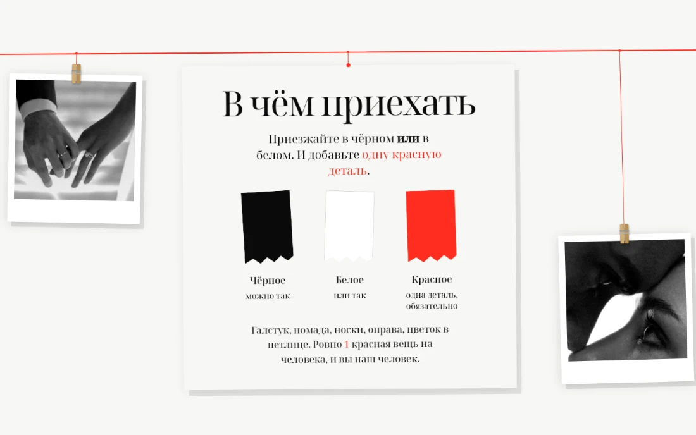

Работы
Восемь сайтов, три уровня
Уровень задаёт объём: сколько блоков, что умеет форма ответа, есть ли рассадка и языки. Дизайн одинаково подробный на всех трёх. Откройте любую работу: это настоящие сайты, а не картинки.
Простой
5 000 ₽
Пять-шесть блоков и ответ гостя в одно поле. Всё главное на одной странице, без лишнего.
-
 Открыть сайт
Открыть сайт
Золотой час
Короткий и честный: шесть блоков, ничего лишнего, ответ гостя в одно поле. Если свадьба скоро, а хочется просто и красиво, этого хватает.
-
 Открыть сайт
Открыть сайт
Тихий полдень
Ветвь свешивается сверху, как над головой, и тень от неё медленно ходит по светлой бумаге. Имена во весь экран, а середина оставлена пустой: это и есть полдень.
Средний
7 000 ₽
Восемь-десять блоков, галерея, отсчёт до даты и полноценная форма ответа со спутниками.
-
 Открыть сайт
Открыть сайт
Утро в саду
Светлый и спокойный. Имена написаны от руки, буквы появляются по одной. Галерея развёрнута как журнальный разворот, солнце идёт по небу вместе с прокруткой.
-
 Открыть сайт
Открыть сайт
Стеклянный сад
Листается вбок, на телефоне пальцем, как сторис. Семь экранов, на каждом из линии прорастают ветви, а подписи пишутся от руки прямо на глазах.
-

Открыть сайтРазворот
Чёрно-белый журнал, который листается вправо. Через весь сайт идёт красная нить, и на ней на ниточках висят карточки с текстом и фотографии полароидами на деревянных прищепках. Под курсором каждая раскачивается.
-
 Открыть сайт
Открыть сайт
Ротонда
Свадьба за границей. За именами идёт непрерывный облёт виллы в золотой час, и на втором экране он останавливается: дрон садится, и пара начинает говорить. Есть блок про перелёт и трансфер.
Сложный
10 000 ₽
Всё, что умеет сайт: рассадка с поиском своего стола, два языка, музыка, календарь, сводка ответов.
-
 Открыть сайт
Открыть сайт
Вечер при свечах
Самый большой из всех: отсчёт до даты, схема рассадки с поиском своего стола, переключатель русский / английский и тихая фоновая музыка.
-
 Открыть сайт
Открыть сайт
Золотой портал
Небо здесь не фотография, а живопись: закат Куинджи. Поперёк него сами по себе летят голуби, а вниз по странице разворачивается красная лента с узлами, по узлу на каждый час свадебного дня.